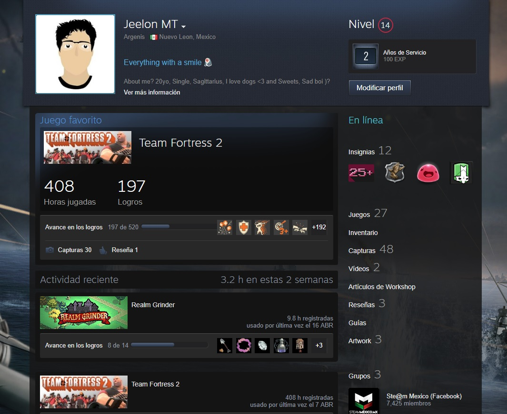
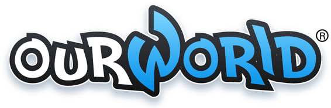

Mi vida en el mundo de los videojuegos inicio también a una muy temprana edad, pero ciertamente no tenía la misma dedicación comparando con otros de mis pasatiempos.
Todo comenzó a mi edad de 6 años, cuando apenas iniciaba la primaria, mi tía Veronica trajó a casa de mis abuelos una computadora para mi hermana, quien entonces tenía 11 años de edad y estaba interesada en el uso de la computadora para sus trabajos escolares; recuerdo que era una PC de gabinete con menos de 240 gb en disco duro y 1.5 gb de memoria RAM, tambíen su sistema operativo era el windows XP del 98 ¡Que recuerdos!.
A esa edad yo me la pasaba viendo pequeños artículos de animales y experimentos raros en internet, y digo viendo porque aún no leía con total comprensión y fluidez; hasta que un día en la publicidad ví un anuncio de un juego en línea, de Navegador, llamado Neopets ,si bien no fue el primero que jugué, es el primero que conocí; desde ese momento todo cambió, mi uso del PC se enfocó solo a jugar los mutiples juegos de navegador que en ese entonces se ofrecían, me había olvidado de todo lo demás y me había enfocado solo a jugar y jugar, eran divertidos, coloridas, amigables a la vista y por sobre todas las cosas, aprendía muchisimo más de ellos que de cualquier otra fuente disponible a mi edad. 
Para comenzar, hablaré del primer juego de navegador que jugué, mencionado ya, Habbo Hotel ; Habbo es una comunidad virtual online de estilo vintage en donde puedes crear tu propio avatar, hacer amigos, chatear, construir salas y diseñar juegos, y mucho más. Podrás jugar gratis a Habbo y con ello explorar un universo infinito de salas, retos, chats y ganar cientos de premios sin tener que gastarte un crédito. Para algunas cosas extras dentro de Habbo tendrás que usar Habbo Créditos (la moneda virtual con costo real): mascotas, Habbo Club, Club del Arquitecto y muebles.
Pasé muchísimas horas en este juego pasando muy buenos ratos con toda la gente que iba conociendo, personalizando mi avatar y jugando los minijuegos que este incluía, además por ser una red social hasta cierto punto, me permitió concoer también gente de otros países, como españoles, ecuatorianos, colombianos y todo aquel de habla hispana, los administradores siempre recurrían al usuario para mejorar la experiencia de juego por lo cual cada actualización era una sensación, pero al pasar de los años, desafortunadamente, el juego perdió mucha popularidad y actualmente está practicamente en el olvido.
League of Legends es un juego competitivo en línea de ritmo frenético, que fusiona la velocidad y la intensidad de la estrategia en tiempo real (ETR) con elementos de juegos de rol. Dos equipos de poderosos campeones, cada uno con un diseño y estilo de juegos únicos, compiten cara a cara a través de diversos campos de batalla y modos de juego. Con un plantel de campeones en constante expansión, actualizaciones frecuentes y un emocionante panorama competitivo, League of Legends ofrece posibilidades de juego ilimitadas a usuarios de todos los niveles de habilidad.
Siempre me he hecho esta pregunta. ¿merece la pena jugar al lol?.
Desde siempre he escuchado cosas como que la comunidad es horrible, que es como una droga,que es difícil de jugar, que es repetitivo, te vas a volver antisocial etc. Y algunas cosas de esas son ciertas, es una droga una vez aprendes a jugarlo lo vas a querer jugar ya que si ganas vas a querer ganar otra y si pierdes, vas a querer quitarte el sabor de la derrota y así me he pasado días enteros sin parar de jugar.
La comunidad esta llena de gente horrible y si, eso es un hecho; ¿es repetitivo?. En lo que se ve desde fuera del juego si, mismos mapas, mismo objetivo,mismos objetos. pero desde un punto de vista de un jugador no lo es, siempre hay combinaciones distintas, builds distintas, gente distinta. y eso hace que cada partida en el mismo mapa se vuelva diferente, y en cuanto a ser antisocial; es cierto pero no del todo, por decirlo de una forma hay días que prefiero pasar de los amigos y tirarme todo el dia sentado jugando al lol, mientras que también pienso ¿ser un jugador de video juegos no es la mejor forma de ser social? imagina que juegas 5 partidas en un dia, te vas a encontrar a 45 personas que están ahí jugando contigo,es como si estuvieras rodeado de gente pasando un rato agradable, es mas en mi caso yo siempre juego con gente que me he encontrado por ahí con discord ts o skype, hace unos días unos chavales con los que juego de galicia vinieron a la Madrid gaming experience, y yo que soy de Madrid acabamos yendo juntos por la feria, no los había visto en mi vida pero es como si nos conociésemos de hace 2 años.
Sinceramente es un juego lleno de cosas malas, alta competitividad pero por sobre todo es Divertidisimo y he aquí un pequeño momento dentro del juego:

OurWorld es un mundo virtual que contiene una variedad de actividades y juegos en línea. Fue desarrollado por FlowPlay, y está dirigido a los adolescentes.
ourWorld combina un mundo virtual en línea con una variedad de actividades de juegos casuales. Cada jugador tiene un avatar y un condominio que puede ser decorado.
Una moneda en el juego, "Flujo", se gana hablando, bailando, comiendo y bebiendo, y jugando juegos. El flujo puede ser intercambiado por puntos de experiencia y monedas. ourWorld opera con un modelo de negocio de microtransacción que permite a los jugadores comprar "gemas" en el juego. Las monedas y gemas se utilizan para comprar artículos para su avatar, como ropa, accesorios o muebles. A medida que los jugadores ganan experiencia, suben de nivel. Esto les otorga premios como movimientos de baile, acceso a nuevas áreas, vehículos y privilegios.
Los jugadores también pueden hablar entre sí, solicitar amistad, enviar artículos de regalo, crear grupos, enviar y recibir correo, participar en concursos y entregar sus "corazones".
Este juego en particular, fue clave para mi avance academico; la pregunta sería ¿cómo?, fácil, este juego de navegador, que actualmente tiene la opción de lenguaje al español, en el entonces que yo lo jugaba estaba enteramente en inglés o portugués, lo conocí durante mis años de secundaria y marco mi progreso en la segunda lengua que es el inglés, todos los jugadores hablaban inglés y solo unos cuantos portugués por lo cual mi vocabulario así como mi grámatica se vieron mejoradas al jugar, conocí muchos verbos de acción y jergas americanas, si bien no conocí mucho de las personas por mis limitaciones en el idioma si ví mejorada mi comprensión, recuerdo mucho que los primeros días jugando me equivoque con el botón "Wear" (Vestir) y el Botón "Sell" (Vender) y terminé con mi personaje en calnzoncillos por una semana completa hasta que logre averiguar como conseguir ropa y equiparla, al ser un juego de navegador y del estilo "Red Social" como Habbo, no existían guías ni mucho menos tutoriales, por lo cuál me vali de mi Diccionario Bilingüe y el traductor de Google


{kind=link}
{kind=link}
{kind=link}